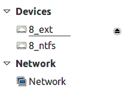
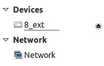

Кроме самого hook'а я подготовил тестовую программу, которая ведет себя так же, как и Nemo. Исходные тексты находятся в том же каталоге, что и сама статья (или см. Github. Для начала разберемся с ограничениями, о которых говорилось в части 2 .
Воспроизведем ситуацию, описанную в части 1. Итак, подключим флешку, смонтируем диск с меткой 8_ext и оставим несмонтированным диск с меткой 8_ntfs.
Запустим тестовую программу:
david@athlonx2 ~/Projects/flaz14.github.io/how-to-hide-non-mounted-drives/code $ make test ./application Hi! I'm sample application! + /dev/sdb2 [8_ext] - /dev/sdb1 [8_ntfs] Bye!Как видно из вывода, Nemo "видит" смонтированный диск с меткой 8_ext и несмонтированный диск с меткой 8_ntfs.
Теперь запустим тестовую программу с hook'ом:
david@athlonx2 ~/Projects/flaz14.github.io/how-to-hide-non-mounted-drives/code $ make test-hook
gcc -Wall -g -shared -ldl -fPIC `pkg-config --cflags gtk+-3.0` libnemohook.c -o libnemohook.so `pkg-config --libs
gtk+-3.0`
LD_PRELOAD=./libnemohook.so ./application
Hi! I'm sample application!
>
/dev/sda
<
>
/dev/sr0
<
>
/dev/sdb
<
+ /dev/sdb2 [8_ext]
Bye!
Итак,
>
/dev/...
<
означает, что hook перехватил обращение к функции g_drive_get_volumes(). Так, первым
физическим диском, тома на котром попытался бы получить Nemo, является
/dev/sda. На это диске не нашлось томов, поскольку g_drive_get_volumes()
покажет только те тома, которых нет в /etc/fstab). Далее, для физического диска
/dev/sr0 тоже не нашлось дисков (перед запуском тестовой программы в приводе оптических
дисков было пусто). А вот на физическом диске /dev/sdb нашелся один только один том.
Сравним результаты:
+ /dev/sdb2 [8_ext] - /dev/sdb1 [8_ntfs]
+ /dev/sdb2 [8_ext]
Теперь пришло время сменить оригинальный Nemo на костыль. Чтобы "костыльный" Nemo запускался из
терминала, достаточно создать скрипт с именем nemo (скрипт будет устанавливать
LD_PRELOAD) и добавить путь к этому скрипту в переменную окружения PATH (самый
простой способ - поместить скрипт в ~/bin). Но будет, если попытаться запустить
Nemo из стартового меню Cinnamon? Или с помощью горячей клавиши на мультимедийной клавиатуре?
Я попробовал все варианты: способ с переменной окружения PATH работает всегда. Так
что установим костыль:
david@athlonx2 ~/Projects/flaz14.github.io/how-to-hide-non-mounted-drives/code $ make install gcc -Wall -g -shared -ldl -fPIC `pkg-config --cflags gtk+-3.0` libnemohook.c -o libnemohook.so `pkg-config --libs gtk+-3.0` cp ./libnemohook.so ~/bin/libnemohook.so chmod 500 ~/bin/libnemohook.so cp ./nemo ~/bin/nemo chmod 500 ~/bin/nemoКак видим, скрипт-обертка (именно он подсовывает hook) и собственно hook размещаются в каталоге
~/bin/. Чтобы убрать костыль, достаточно набрать make uninstall (или
же удалить файлы вручную).
Возьмем все ту же флешку с двумя разделами: 8_ext и 8_ntfs: 8_ext оставим
смонтированным, а 8_ntfs размонтируем. Запустим оригинальную версию Nemo
(нужно напрямую вызвать
Теперь запустим Nemo с костылем (как уже говорилось выше, для этого не нужно дополнительных
усилий, достаточно нажать на соответствующую кнопку в стартовом меню) и увидим все то же самое,
только без 8_ntfs на боковой панели, что проиллюстрировано на рисунке 3.2:
Как видим, костыль работает [1].
⎯⎯⎯⎯⎯
↑
Я проверял только в Linux Mint 17.1 Cinnamon 32bit.
/usr/bin/nemo из командной строки). Увидим картинку, уже
приводившуюся в
части 1:
Рисунок 3.1 - пример отображения несмонтированного диска на боковой панели Nemo

Рисунок 3.2 - несмонтировый диск не виден на боковой панели Nemo благодаря hook'у

Достоинства:
Недостатки:
nemo и libnemohook.so
из ~/bin/.
↑
⌂